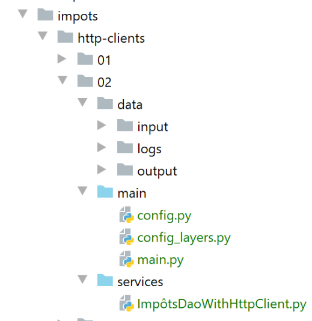

24. Application exercise: version 7
24.1. Introduction
version 7 of the tax calculation application is identical to version 6 except for the following details:
- the web client will launch multiple HTTP requests simultaneously. In the previous version, these requests were launched sequentially. The server therefore processed only a single request at any given time;
- The server will be multi-threaded: it will be able to process multiple requests simultaneously;
- To track the execution of these requests, we will equip the web server with a logger that will record key moments in the request processing in a text file;
- the server will send an email to the application administrator when it encounters a problem that prevents it from starting, typically an issue with the database associated with the web server;
The application architecture remains unchanged:

The script directory structure is as follows:

The [http-servers/02] folder is first created by copying the [http-servers/01] folder. Modifications are then made to it.
24.2. The utilities

24.2.1. The [Logger] class
The [Logger] class will allow certain web server actions to be logged to a text file:
import codecs
import threading
from datetime import date, datetime
from threading import current_thread
from ImpôtsError import ImpôtsError
class Logger:
# class attribute
verrou = threading.RLock()
# manufacturer
def __init__(self, logs_filename: str):
try:
# open the file in append mode (a)
self.__resource = codecs.open(logs_filename, "a", "utf-8")
except BaseException as erreur:
raise ImpôtsError(18, f"{erreur}")
# writing a log
def write(self, message: str):
# current date / time
today = date.today()
now = datetime.time(datetime.now())
# thread name
thread_name = current_thread().name
# you don't want to be disturbed while writing to the log file
# we request the class's synchronization object (= lock) - only one thread will get it
Logger.verrou.acquire()
try:
# log entry
self.__resource.write(f"{today} {now}, {thread_name} : {message}")
# write immediately - otherwise the text will only be written when the write stream is closed
# we want to track logs over time
self.__resource.flush()
finally:
# release the synchronization object (= lock) so that another thread can obtain it
Logger.verrou.release()
# freeing up resources
def close(self):
# close file
if self.__resource:
self.__resource.close()
- Lines 10–11: We define a class attribute. A class attribute is a property shared by all instances of the class. It is referenced using the notation [Classe.attribut_de_classe] (lines 30, 39). The class attribute [verrou] will serve as a synchronization object for all threads executing the code in lines 31–36;
- lines 14–19: the constructor receives the absolute path of the log file. This file is then opened, and the file descriptor retrieved is stored in the class;
- line 17: the log file is opened in ‘append’ mode (a). Each line written will be appended to the end of the file;
- lines 22–39: the [write] method allows a message passed as a parameter to be written to the log file. Two pieces of information are appended to this message:
- line 24: the current date;
- line 25: the current time;
- line 27: the name of the thread writing the log. It is important to remember here that a web application serves multiple users at the same time. Each request is assigned a thread to execute it. If this thread is paused—typically for an I/O operation (network, files, database)—then the processor will be handed over to another thread. Because of these possible interruptions, we cannot be sure that a thread will succeed in writing a line to the log file without being interrupted. There is then a risk that logs from two different threads will get mixed up. The risk is low, perhaps even zero, but we have nevertheless decided to show how to synchronize two threads’ access to a shared resource, in this case the log file;
- line 30: before writing, the thread requests the key to the front door. The requested key is the one created on line 11. It is indeed unique: a class attribute is unique for all instances of the class;
- At time T1, a Thread1 thread obtains the key. It can then execute line 33;
- At time T2, thread Thread1 is paused before it has even finished writing the log;
- At time T3, thread Thread2, which has acquired the processor, must also write a log. It thus reaches line 30, where it requests the front door key. It is told that another thread already has it. It is then automatically paused. This will be the case for all threads that request this key;
- At time T4, thread Thread1, which had been paused, regains the processor. It then finishes writing the log;
- lines 32–36: Writing to the log file occurs in two steps:
- Line 33: The file descriptor obtained on line 17 works with a buffer. The [write] operation on line 33 writes to this buffer but not directly to the file. The buffer is then flushed to the file under certain conditions:
- the buffer is full;
- the file descriptor undergoes a [close] or [flush] operation;
- line 36: we force the log line to be written to the file. We do this because we want to see the logs from the different threads interleaved. If we don’t do this, the logs from a single thread will all be written at the same time when the file descriptor is closed, line 45. It would then be much harder to see that certain threads have been stopped: we would have to look at the timestamps in the logs;
- Line 39: The Thread1 thread returns the lock that was given to it. It can now be given to another thread;
- line 22: the [write] method is therefore synchronized: only one thread at a time writes to the log file. The key to the mechanism is line 30: no matter what happens, only one thread retrieves the key to proceed to the next line. It keeps it until it returns it (line 39);
- Lines 41–45: The [close] method releases the resources allocated to the log file descriptor;
The logs written to the log file will look like this:
24.2.2. The [SendAdminMail] class
The [SendAminMail] class allows you to send a message to the application administrator when the application crashes.

The [SendAdminMail] class is configured in the [config] [2] script as follows:
# config server SMTP
"adminMail": {
# server SMTP
"smtp-server": "localhost",
# server port SMTP
"smtp-port": "25",
# director
"from": "guest@localhost.com",
"to": "guest@localhost.com",
# mail subject
"subject": "plantage du serveur de calcul d'impôts",
# tls to True if server SMTP requires authorization, False otherwise
"tls": False
}
The [SendAdminMail] class receives the dictionary from lines 2–13 as well as the email sending configuration. The class is as follows:
# imports
import smtplib
from email.mime.text import MIMEText
from email.utils import formatdate
class SendAdminMail:
# -----------------------------------------------------------------------
@staticmethod
def send(config: dict, message: str, verbose: bool = False):
# sends message to smtp server config['smtp-server'] on port config[smtp-port]
# if config['tls'] is true, support TLS will be used
# le mail est envoyé de la part de config['from']
# for recipient config['to']
# message has subject config['subject']
# a logger reference is found in config['logger']
# we retrieve the logger in the config - can be equal to None
logger = config["logger"]
# server SMTP
server = None
# we send the message
try:
# the SMTP server
server = smtplib.SMTP(config["smtp-server"])
# verbose mode
server.set_debuglevel(verbose)
# secure connection?
if config['tls']:
# start of safety dialogue
server.starttls()
# authentication
server.login(config["user"], config["password"])
# construction of a Multipart message - this is the message that will be sent
msg = MIMEText(message)
msg['From'] = config["from"]
msg['To'] = config["to"]
msg['Date'] = formatdate(localtime=True)
msg['Subject'] = config["subject"]
# we send the message
server.send_message(msg)
# log - the logger may not exist
if logger:
logger.write(f"[SendAdminMail] Message envoyé à [{config['to']}] : [{message}]\n")
except BaseException as erreur:
# log- the logger may not exist
if logger:
logger.write(
f"[SendAdminMail] Erreur [{erreur}] lors de l'envoi à [{config['to']}] du message [{message}] : \n")
finally:
# we're done - we release the resources mobilized by the function
if server:
server.quit()
- lines 24-54: this is the code already covered in example |smtp/02|;
- line 20: we retrieve the reference of a logger. This is used on lines 45 and 49;
24.3. The web server
24.3.1. Configuration
The server configuration is very similar to that of the server discussed previously. Only the file [config.py] has changed slightly:
def configure(config: dict) -> dict:
import os
# step 1 ------
# folder of this file
script_dir = os.path.dirname(os.path.abspath(__file__))
# root path
root_dir = "C:/Data/st-2020/dev/python/cours-2020/python3-flask-2020"
# absolute dependencies
absolute_dependencies = [
# project files
# BaseEntity, MyException
f"{root_dir}/classes/02/entities",
# InterfaceImpôtsDao, InterfaceImpôtsMétier, InterfaceImpôtsUi
f"{root_dir}/impots/v04/interfaces",
# AbstractImpôtsdao, ImpôtsConsole, ImpôtsMétier
f"{root_dir}/impots/v04/services",
# ImpotsDaoWithAdminDataInDatabase
f"{root_dir}/impots/v05/services",
# AdminData, ImpôtsError, TaxPayer
f"{root_dir}/impots/v04/entities",
# Constants, slices
f"{root_dir}/impots/v05/entities",
# IndexController
f"{root_dir}/impots/http-servers/01/controllers",
# scripts [config_database, config_layers]
script_dir,
# Logger, SendAdminMail
f"{script_dir}/../utilities",
]
# set the syspath
from myutils import set_syspath
set_syspath(absolute_dependencies)
# step 2 ------
# application configuration
config.update({
# users authorized to use the application
"users": [
{
"login": "admin",
"password": "admin"
}
],
# log file
"logsFilename": f"{script_dir}/../data/logs/logs.txt",
# config server SMTP
"adminMail": {
# server SMTP
"smtp-server": "localhost",
# server port SMTP
"smtp-port": "25",
# director
"from": "guest@localhost.com",
"to": "guest@localhost.com",
# mail subject
"subject": "plantage du serveur de calcul d'impôts",
# tls to True if server SMTP requires authorization, False otherwise
"tls": False
},
# thread pause time in seconds
"sleep_time": 0
})
# step 3 ------
# database configuration
import config_database
config["database"] = config_database.configure(config)
# step 4 ------
# instantiation of application layers
import config_layers
config['layers'] = config_layers.configure(config)
# we return the configuration
return config
- lines 40–66: we add to the server’s configuration dictionary the elements related to the logger (line 49) and those related to sending an alert email to the application administrator (lines 51–63);
- line 65: to better see the threads in action, we will force some of them to stop. [sleep_time] is the duration of the stop expressed in seconds;
- lines 27–28: note that we are using the controller [index_controller] from the previous version 6;
24.3.2. The main script [main]
The main script [main] is as follows:
# a mysql or pgres parameter is expected
import sys
syntaxe = f"{sys.argv[0]} mysql / pgres"
erreur = len(sys.argv) != 2
if not erreur:
sgbd = sys.argv[1].lower()
erreur = sgbd != "mysql" and sgbd != "pgres"
if erreur:
print(f"syntaxe : {syntaxe}")
sys.exit()
# configure the application
import config
config = config.configure({'sgbd': sgbd})
# dependencies
from flask import request, Flask
from flask_httpauth import HTTPBasicAuth
import json
import index_controller
from flask_api import status
from SendAdminMail import SendAdminMail
from myutils import json_response
from Logger import Logger
import threading
import time
from random import randint
from ImpôtsError import ImpôtsError
# authentication manager
auth = HTTPBasicAuth()
@auth.verify_password
def verify_password(login, password):
# user list
users = config['users']
# browse this list
for user in users:
if user['login'] == login and user['password'] == password:
return True
# we didn't find
return False
# send an e-mail to the administrator
def send_adminmail(config: dict, message: str):
# send an e-mail to the application administrator
config_mail = config["adminMail"]
config_mail["logger"] = config['logger']
SendAdminMail.send(config_mail, message)
# check log file
logger = None
erreur = False
message_erreur = None
try:
# logger
logger = Logger(config["logsFilename"])
except BaseException as exception:
# log console
print(f"L'erreur suivante s'est produite : {exception}")
# we note the error
erreur = True
message_erreur = f"{exception}"
# the logger is stored in config
config['logger'] = logger
# error handling
if erreur:
# mail to administrator
send_adminmail(config, message_erreur)
# end of application
sys.exit(1)
# start-up log
log = "[serveur] démarrage du serveur"
logger.write(f"{log}\n")
print(log)
# data recovery from tax authorities
erreur = False
try:
# admindata will be read-only application data
config["admindata"] = config["layers"]["dao"].get_admindata()
# success log
logger.write("[serveur] connexion à la base de données réussie\n")
except ImpôtsError as ex:
# we note the error
erreur = True
# error log
log = f"L'erreur suivante s'est produite : {ex}"
# console
print(log)
# log file
logger.write(f"{log}\n")
# mail to administrator
send_adminmail(config, log)
# the main thread no longer needs the logger
logger.close()
# if there has been an error, we stop
if erreur:
sys.exit(2)
# the Flask application can be started
app = Flask(__name__)
# Home URL
@app.route('/', methods=['GET'])
@auth.login_required
def index():
…
# hand only
if __name__ == '__main__':
# start the server
app.config.update(ENV="development", DEBUG=True)
app.run(threaded=True)
- lines 1-10: the script expects a parameter [mysql / pgres] that tells it which SGBD to use;
- lines 12–14: the application is configured (Python Path, layers, database);
- lines 16–28: dependencies required by the application;
- lines 30–43: authentication management;
- lines 46–51: a function that sends an email to the application administrator;
- the function expects two parameters:
- config: a dictionary with the keys [adminMail] and [logger];
- the message to be sent;
- lines 49–50: we prepare the sending configuration;
- the email is sent;
- lines 54–74: we check for the presence of the log file;
- lines 70–74: if the log file could not be opened, send an email to the administrator and exit;
- lines 76–79: log the server startup;
- lines 81–98: retrieve tax administration data from the database;
- lines 88–98: if we were unable to retrieve this data, we log the error both to the console and to the log file;
- lines 100–101: the main thread will no longer log (the created threads will not use the same file descriptor);
- lines 103–105: if we were unable to connect to the database, we stop;
- line 122: the server is started in multithreaded mode;
The function [index] (line 114) is as follows:
# Home URL
@app.route('/', methods=['GET'])
@auth.login_required
def index():
logger = None
try:
# logger
logger = Logger(config["logsFilename"])
# we store it in a config associated with the thread
thread_config = {"logger": logger}
thread_name = threading.current_thread().name
config[thread_name] = {"config": thread_config}
# log the request
logger.write(f"[index] requête : {request}\n")
# the thread is interrupted if requested
sleep_time = config["sleep_time"]
if sleep_time != 0:
# pause is randomized so that some threads are interrupted and others not
aléa = randint(0, 1)
if aléa == 1:
# log before break
logger.write(f"[index] mis en pause du thread pendant {sleep_time} seconde(s)\n")
# break
time.sleep(sleep_time)
# the request is executed by a controller
résultat, status_code = index_controller.execute(request, config)
# was there a fatal error?
if status_code == status.HTTP_500_INTERNAL_SERVER_ERROR:
# send an e-mail to the application administrator
config_mail = config["adminMail"]
config_mail["logger"] = logger
SendAdminMail.send(config_mail, json.dumps(résultat, ensure_ascii=False))
# we log the answer
logger.write(f"[index] {résultat}\n")
# we send the answer
return json_response(résultat, status_code)
except BaseException as erreur:
# log the error if possible
if logger:
logger.write(f"[index] {erreur}")
# we prepare the response to the customer
résultat = {"réponse": {"erreurs": [f"{erreur}"]}}
# we send the answer
return json_response(résultat, status.HTTP_500_INTERNAL_SERVER_ERROR)
finally:
# close the log file if it has been opened
if logger:
logger.close()
- line 4: the function executed when a user requests URL /. Because the server is multi-threaded (line 112), a thread will be created to execute the function. This thread can be interrupted and paused at any time to resume execution a little later. It is important to always keep this in mind when the code accesses a resource shared by all threads. In this case, that resource is the log file: all threads write to it;
- line 8: we create an instance of the logger. So all threads will have a different instance of the logger. However, all these loggers point to the same log file. It is still important to note that when a thread closes its logger, this has no effect on the loggers of the other threads;
- Lines 9–12: The logger is stored in the application’s [config] dictionary, associated with a key bearing the thread’s name. Thus, if there are n threads running simultaneously, n entries will be created in the [config] dictionary. [config] is a resource shared among all threads. Therefore, synchronization may be required. I have made an assumption here. I assumed that if two threads simultaneously created their entries in the file [config] and one of them was interrupted by the other, this would have no impact. The interrupted thread could subsequently complete the creation of the entry. If the experiment showed that this assumption was incorrect, access to line 12 would need to be synchronized;
- line 10: we put the logger in a dictionary;
- line 11: [threading.current_thread()] is the thread executing this line, and thus the thread executing the function [index]. We note its name. Each thread has a unique name;
- line 12: we store the thread’s configuration. From now on, we will always proceed as follows: if there is information that cannot be shared between threads, it will still be placed in the general configuration, but associated with the thread’s name;
- line 14: we log the request currently being executed;
- lines 15–24: we randomly pause certain threads so that they yield the processor to another thread;
- line 16: we retrieve the pause duration (in seconds) from the configuration;
- line 17: a pause occurs only if the pause duration is not 0;
- line 19: a random integer in the range [0, 1]. Therefore, only the values 0 and 1 are possible;
- line 20: the thread is paused only if the random number is 1;
- line 22: we log the fact that the thread is about to be paused;
- line 24: the thread is paused for [sleep_time] seconds;
- line 26: when the thread wakes up, it executes the request via the [index_controller] module;
- lines 28–32: if this execution causes a [500 INTERNAL SERVER ERROR]-type error, an email is sent to the administrator;
- lines 30-31: the dictionary [config_mail] is configured and passed to the class [SendAdminMail];
- line 32: the message sent to the administrator is the string jSON from the result that will be sent to the client;
- lines 33-34: we log the response that will be sent to the client (line 36);
- lines 37–44: handling of any exceptions;
- lines 39-40: if the logger exists, we log the error that occurred;
- lines 47-48: close the logger if it exists. Ultimately, the thread creates a logger at the start of the request and closes it once the request has been processed;
24.3.3. The [index_controller] controller
The [index_controller] controller that executes the requests is the same as the previous version:

24.3.4. Execution
We start the Flask server, the mail server |hMailServer|, and the mail client |Thunderbird|. We do not start SGBD. The server stops with the following console logs:
C:\Data\st-2020\dev\python\cours-2020\python3-flask-2020\venv\Scripts\python.exe C:/Data/st-2020/dev/python/cours-2020/python3-flask-2020/impots/http-servers/02/flask/main.py mysql
[serveur] démarrage du serveur
L'erreur suivante s'est produite : MyException[27, (mysql.connector.errors.InterfaceError) 2003: Can't connect to MySQL server on 'localhost:3306' (10061 Aucune connexion n’a pu être établie car l’ordinateur cible l’a expressément refusée)
(Background on this error at: http://sqlalche.me/e/13/rvf5)]
Process finished with exit code 2
The [logs.txt] log file is as follows:
2020-07-23 11:51:38.324752, MainThread : [serveur] démarrage du serveur
2020-07-23 11:51:40.355510, MainThread : L'erreur suivante s'est produite : MyException[27, (mysql.connector.errors.InterfaceError) 2003: Can't connect to MySQL server on 'localhost:3306' (10061 Aucune connexion n’a pu être établie car l’ordinateur cible l’a expressément refusée)
(Background on this error at: http://sqlalche.me/e/13/rvf5)]
2020-07-23 11:51:42.464206, MainThread : [SendAdminMail] Message envoyé à [guest@localhost.com] : [L'erreur suivante s'est produite : MyException[27, (mysql.connector.errors.InterfaceError) 2003: Can't connect to MySQL server on 'localhost:3306' (10061 Aucune connexion n’a pu être établie car l’ordinateur cible l’a expressément refusée)
(Background on this error at: http://sqlalche.me/e/13/rvf5)]]
Using Thunderbird, check the emails from the administrator [guest@localhost.com]:

Then we launch SGBD and request URL and [http://127.0.0.1:5000/?mari%C3%A9=oui&enfants=3&salaire=200000]. The logs become as follows:
2020-07-23 11:56:38.891753, MainThread : [serveur] démarrage du serveur
2020-07-23 11:56:38.987999, MainThread : [serveur] connexion à la base de données réussie
2020-07-23 11:56:40.586747, MainThread : [serveur] démarrage du serveur
2020-07-23 11:56:40.655254, MainThread : [serveur] connexion à la base de données réussie
2020-07-23 11:56:54.528360, Thread-2 : [index] requête : <Request 'http://127.0.0.1:5000/?marié=oui&enfants=3&salaire=200000' [GET]>
2020-07-23 11:56:54.530653, Thread-2 : [index] {'réponse': {'result': {'marié': 'oui', 'enfants': 3, 'salaire': 200000, 'impôt': 42842, 'surcôte': 17283, 'taux': 0.41, 'décôte': 0, 'réduction': 0}}}
- lines 1-4: note that the server starts twice because the [Debug=True] mode triggers a second startup;
- lines 5-6: the logs give us an idea of the execution time of a request, here 2.293 milliseconds;
24.4. The web client

The [http-clients/02] folder is created by copying the [http-clients/01] folder. We then make a few modifications.
24.4.1. The configuration
The configuration [config] for the application [http-clients/02] is the same as that of the application [http-clients/01], with a few minor differences:
def configure(config: dict) -> dict:
import os
# step 1 ------
# folder of this file
script_dir = os.path.dirname(os.path.abspath(__file__))
# root path
root_dir = "C:/Data/st-2020/dev/python/cours-2020/python3-flask-2020"
# absolute dependencies
absolute_dependencies = [
# project files
# BaseEntity, MyException
f"{root_dir}/classes/02/entities",
# InterfaceImpôtsDao, InterfaceImpôtsMétier, InterfaceImpôtsUi
f"{root_dir}/impots/v04/interfaces",
# AbstractImpôtsdao, ImpôtsConsole, ImpôtsMétier
f"{root_dir}/impots/v04/services",
# ImpotsDaoWithAdminDataInDatabase
f"{root_dir}/impots/v05/services",
# AdminData, ImpôtsError, TaxPayer
f"{root_dir}/impots/v04/entities",
# Constants, slices
f"{root_dir}/impots/v05/entities",
# ImpôtsDaoWithHttpClient
f"{script_dir}/../services",
# configuration scripts
script_dir,
# Logger
f"{root_dir}/impots/http-servers/02/utilities",
]
# set the syspath
from myutils import set_syspath
set_syspath(absolute_dependencies)
# step 2 ------
# application configuration with constants
config.update({
# taxpayer file
"taxpayersFilename": f"{script_dir}/../data/input/taxpayersdata.txt",
# results file
"resultsFilename": f"{script_dir}/../data/output/résultats.json",
# error file
"errorsFilename": f"{script_dir}/../data/output/errors.txt",
# log file
"logsFilename": f"{script_dir}/../data/logs/logs.txt",
# tax calculation server
"server": {
"urlServer": "http://127.0.0.1:5000/",
"authBasic": True,
"user": {
"login": "admin",
"password": "admin"
}
},
# mode debug
"debug": True
}
)
# step 3 ------
# layer instantiation
import config_layers
config['layers'] = config_layers.configure(config)
# we return the configuration
return config
- lines 31-32: we will use the same |Logger| as the one used for the server;
- line 49: the absolute path to the log file;
- line 60: the [debug=True] mode is used to write the web server's responses to the log file;
24.4.2. The [dao] layer
The code for the [ImpôtsDaoWithHttpClient] class changes slightly:
# imports
import requests
from flask_api import status
…
class ImpôtsDaoWithHttpClient(AbstractImpôtsDao, InterfaceImpôtsMétier):
# manufacturer
def __init__(self, config: dict):
# parent initialization
AbstractImpôtsDao.__init__(self, config)
# saving configuration items
# config general
self.__config = config
# server
self.__config_server = config["server"]
# mode debug
self.__debug = config["debug"]
# logger
self.__logger = None
# unused method
def get_admindata(self) -> AdminData:
pass
# tAX CALCULATION
def calculate_tax(self, taxpayer: TaxPayer, admindata: AdminData = None):
# we let the exceptions rise
…
# mode debug ?
if self.__debug:
# logger
if not self.__logger:
self.__logger = self.__config['logger']
# log on
self.__logger.write(f"{response.text}\n")
# response status code HTTP
status_code = response.status_code
…
- Line 17: The general configuration is saved. We will see later that when the constructor for class [ImpôtsDaoWithHttpClient] is executed, the dictionary [config] does not yet contain the key [logger] used on line 37. This is why we cannot initialize [self.__logger] (line 23) in the constructor;
- line 21: a key named [debug] has been added to the configuration to control the logging for lines 33–39;
- line 34: if in [debug] mode;
- lines 36–37: possible initialization of the [self.__logger] property. When the [calculate_tax] method is used, the [logger] key is part of the [config] dictionary;
- line 39: the text document associated with the server’s response HTTP is logged;
The [dao] layer will be executed simultaneously by multiple threads. However, here we create a single instance of this layer (see config_layers). We must therefore verify that the code does not involve write access to shared data, typically the properties of the [ImpôtsDaoWithHttpClient] class that implements the [dao] layer. However, in the code above, line 37 modifies a property of the class instance. Here, this has no consequences because all threads share the same logger. If this had not been the case, access to line 37 would have had to be synchronized.
24.4.3. The main script
The main script [main] evolves as follows:
# configure the application
import config
config = config.configure({})
# dependencies
from ImpôtsError import ImpôtsError
import random
import sys
import threading
from Logger import Logger
# execution of the [dao] layer in a thread
# taxpayers is a list of taxpayers
def thread_function(dao, logger, taxpayers: list):
…
# list of client threads
threads = []
logger = None
# code
try:
# logger
logger = Logger(config["logsFilename"])
# it is stored in the config
config["logger"] = logger
# retrieve the [dao] layer
dao = config["layers"]["dao"]
# reading taxpayer data
taxpayers = dao.get_taxpayers_data()["taxpayers"]
# taxpayers?
if not taxpayers:
raise ImpôtsError(36, f"Pas de contribuables valides dans le fichier {config['taxpayersFilename']}")
# multi-threaded tax calculation for taxpayers
i = 0
l_taxpayers = len(taxpayers)
while i < len(taxpayers):
# each thread will process from 1 to 4 contributors
nb_taxpayers = min(l_taxpayers - i, random.randint(1, 4))
# the list of taxpayers processed by the thread
thread_taxpayers = taxpayers[slice(i, i + nb_taxpayers)]
# i is incremented for the next thread
i += nb_taxpayers
# create the thread
thread = threading.Thread(target=thread_function, args=(dao, logger, thread_taxpayers))
# we add it to the list of threads in the main script
threads.append(thread)
# we launch the thread - this operation is asynchronous - we don't wait for the thread's result
thread.start()
# the main thread waits for all threads it has launched to finish
for thread in threads:
thread.join()
# here all threads have finished their work - each has modified one or more objects [taxpayer]
# save the results in the jSON file
dao.write_taxpayers_results(taxpayers)
except BaseException as erreur:
# error display
print(f"L'erreur suivante s'est produite : {erreur}")
finally:
# close the logger
if logger:
logger.close()
# we're done
print("Travail terminé...")
# end of threads that might still exist if we stopped on error
sys.exit()
- The main script differs from that of the previous client in that it will generate multiple execution threads to send requests to the server. The client for version 6 sent all its requests sequentially. Request #i was only made once the response to request #[i-1] was received. Here, we want to see how the server behaves when it receives multiple simultaneous requests. For this, we need threads;
- Line 21: The generated threads will be placed in a list. It is important to understand that the [main] script is also executed by a thread named [MainThread]. This main thread will create other threads that will be responsible for calculating the tax for one or more taxpayers;
- Line 26: A logger is created. This logger will be shared by all threads;
- line 32: we retrieve all taxpayers for whom taxes need to be calculated;
- lines 39–51: these taxpayers are distributed across multiple threads;
- lines 40–41: each thread will process 1 to 4 taxpayers. This number is determined randomly;
- [random.randint(1, 4)] randomly selects a number from the list [1, 2, 3, 4];
- the thread cannot have more than [l-i] taxpayers, where [l-i] represents the number of taxpayers who have not yet been assigned a thread;
- we therefore take the minimum of the two values;
- line 43: once [nb_taxpayers], the number of taxpayers processed by the thread, is known, we take these from the list of taxpayers:
- [slice(10,12)] is the set of indices [10, 11, 12];
- [response.text[39:]] is the list [taxpayers[10], taxpayers[11], taxpayers[12];
- line 45: the value of i, which controls the loop on line 39, is incremented;
- line 47: a thread is created:
- [target=thread_function] specifies the function that the thread will execute. This is the function in lines 16–17. It expects three parameters;
- [ags] is the list of the three parameters expected by the function [thread_function];
Creating a thread does not execute it. It simply creates an object;
- Lines 48–49: The thread that has just been created is added to the list of threads created by the main thread;
- line 51: the thread is launched. It will then run in parallel with the other active threads. Here, it will execute the function [thread_function] with the arguments provided to it;
- lines 53–54: the main thread waits for each of the threads it has launched. Let’s take an example:
- the main thread has launched three [th1, th2, th3] threads;
- the main thread waits for each of the threads (lines 53–54) in the order of the for loop: [th1, th2, th3];
- let’s assume the threads finish in the order [th2, th1, th3];
- the main thread waits for th1 to finish. When th2 finishes, nothing happens;
- when th1 finishes, the main thread waits for th2. However, th2 has already finished. The main thread then moves on to the next thread and waits for th3;
- when th3 finishes, the main thread has finished waiting and then proceeds to execute line 57;
- Line 57 writes the results to the results file. This is a good example of object references:
- line 43: the list [thread_payers] associated with a thread contains copies of the object references contained in the list [taxpayers];
- We know that the tax calculation will modify the objects pointed to by the references in the list [thread_payers]. These objects will be updated with the results of the tax calculation. However, the references themselves are not modified. Therefore, the references in the initial list [taxpayers] “see” or “point to” the modified objects;
The function [thread_function] executed by the threads is as follows:
# execution of the [dao] layer in a thread
# taxpayers is a list of taxpayers
def thread_function(dao, logger, taxpayers: list):
# log thread start
thread_name = threading.current_thread().name
logger.write(f"début du thread [{thread_name}] avec {len(taxpayers)} contribuable(s)\n")
# taxpayers' taxes are calculated
for taxpayer in taxpayers:
# log
logger.write(f"début du calcul de l'impôt de {taxpayer}\n")
# synchronous tax calculation
dao.calculate_tax(taxpayer)
# log
logger.write(f"fin du calcul de l'impôt de {taxpayer}\n")
# log end of thread
logger.write(f"fin du thread [{thread_name}]\n")
- Functions executed simultaneously by multiple threads are often tricky to write: you must always verify that the code does not attempt to modify data shared between threads. When this occurs, you must implement synchronized access to the shared data that is about to be modified;
- Line 3: The function receives three parameters:
- [dao]: a reference to the [dao] layer. This data is shared;
- [logger]: a reference to the logger. This data is shared;
- [taxpayers]: a list of taxpayers. This data is not shared: each thread manages a different list;
- Let’s examine the two references [dao, logger]:
- we saw that the object pointed to by the reference [dao] had a reference [self.__logger] that was modified by the threads, but to set a value common to all threads;
- The reference [logger] points to a file descriptor. We saw that there could be a problem when writing logs to the file. For this reason, writing to the file has been synchronized;
- lines 5–6: we log the thread name and the number of taxpayers it must handle;
- lines 8–14: calculation of taxpayers’ taxes;
- line 16: we log the end of the thread;
24.4.4. Execution
Let’s start the web server as in the previous section (web server, SGBD, hMailServer, Thunderbird), then run the client script [main]. In the [data/output/errors.txt, data/output/résultats.json] files, we have the same results as in the previous version. In the [data/logs/logs.txt] file, we have the following logs:
2020-07-24 10:05:20.942404, Thread-1 : début du thread [Thread-1] avec 1 contribuable(s)
2020-07-24 10:05:20.943458, Thread-1 : début du calcul de l'impôt de {"id": 1, "marié": "oui", "enfants": 2, "salaire": 55555}
2020-07-24 10:05:20.943458, Thread-2 : début du thread [Thread-2] avec 3 contribuable(s)
2020-07-24 10:05:20.946502, Thread-3 : début du thread [Thread-3] avec 1 contribuable(s)
2020-07-24 10:05:20.946502, Thread-2 : début du calcul de l'impôt de {"id": 2, "marié": "oui", "enfants": 2, "salaire": 50000}
2020-07-24 10:05:20.947003, Thread-3 : début du calcul de l'impôt de {"id": 5, "marié": "non", "enfants": 3, "salaire": 100000}
2020-07-24 10:05:20.947003, Thread-4 : début du thread [Thread-4] avec 3 contribuable(s)
2020-07-24 10:05:20.950324, Thread-4 : début du calcul de l'impôt de {"id": 6, "marié": "oui", "enfants": 3, "salaire": 100000}
2020-07-24 10:05:20.948449, Thread-5 : début du thread [Thread-5] avec 3 contribuable(s)
2020-07-24 10:05:20.953645, Thread-5 : début du calcul de l'impôt de {"id": 9, "marié": "oui", "enfants": 2, "salaire": 30000}
2020-07-24 10:05:20.976143, Thread-1 : {"réponse": {"result": {"marié": "oui", "enfants": 2, "salaire": 55555, "impôt": 2814, "surcôte": 0, "taux": 0.14, "décôte": 0, "réduction": 0}}}
2020-07-24 10:05:20.976695, Thread-1 : fin du calcul de l'impôt de {"id": 1, "marié": "oui", "enfants": 2, "salaire": 55555, "impôt": 2814, "surcôte": 0, "taux": 0.14, "décôte": 0, "réduction": 0}
2020-07-24 10:05:20.976695, Thread-1 : fin du thread [Thread-1]
2020-07-24 10:05:21.973914, Thread-2 : {"réponse": {"result": {"marié": "oui", "enfants": 2, "salaire": 50000, "impôt": 1384, "surcôte": 0, "taux": 0.14, "décôte": 384, "réduction": 347}}}
2020-07-24 10:05:21.973914, Thread-2 : fin du calcul de l'impôt de {"id": 2, "marié": "oui", "enfants": 2, "salaire": 50000, "impôt": 1384, "surcôte": 0, "taux": 0.14, "décôte": 384, "réduction": 347}
2020-07-24 10:05:21.973914, Thread-2 : début du calcul de l'impôt de {"id": 3, "marié": "oui", "enfants": 3, "salaire": 50000}
2020-07-24 10:05:21.977130, Thread-4 : {"réponse": {"result": {"marié": "oui", "enfants": 3, "salaire": 100000, "impôt": 9200, "surcôte": 2180, "taux": 0.3, "décôte": 0, "réduction": 0}}}
2020-07-24 10:05:21.977130, Thread-4 : fin du calcul de l'impôt de {"id": 6, "marié": "oui", "enfants": 3, "salaire": 100000, "impôt": 9200, "surcôte": 2180, "taux": 0.3, "décôte": 0, "réduction": 0}
2020-07-24 10:05:21.977130, Thread-4 : début du calcul de l'impôt de {"id": 7, "marié": "oui", "enfants": 5, "salaire": 100000}
2020-07-24 10:05:21.982634, Thread-3 : {"réponse": {"result": {"marié": "non", "enfants": 3, "salaire": 100000, "impôt": 16782, "surcôte": 7176, "taux": 0.41, "décôte": 0, "réduction": 0}}}
2020-07-24 10:05:21.982634, Thread-5 : {"réponse": {"result": {"marié": "oui", "enfants": 2, "salaire": 30000, "impôt": 0, "surcôte": 0, "taux": 0.0, "décôte": 0, "réduction": 0}}}
2020-07-24 10:05:21.983134, Thread-3 : fin du calcul de l'impôt de {"id": 5, "marié": "non", "enfants": 3, "salaire": 100000, "impôt": 16782, "surcôte": 7176, "taux": 0.41, "décôte": 0, "réduction": 0}
2020-07-24 10:05:21.983134, Thread-5 : fin du calcul de l'impôt de {"id": 9, "marié": "oui", "enfants": 2, "salaire": 30000, "impôt": 0, "surcôte": 0, "taux": 0.0, "décôte": 0, "réduction": 0}
2020-07-24 10:05:21.983134, Thread-3 : fin du thread [Thread-3]
2020-07-24 10:05:21.983763, Thread-5 : début du calcul de l'impôt de {"id": 10, "marié": "non", "enfants": 0, "salaire": 200000}
2020-07-24 10:05:22.008562, Thread-5 : {"réponse": {"result": {"marié": "non", "enfants": 0, "salaire": 200000, "impôt": 64210, "surcôte": 7498, "taux": 0.45, "décôte": 0, "réduction": 0}}}
2020-07-24 10:05:22.008562, Thread-5 : fin du calcul de l'impôt de {"id": 10, "marié": "non", "enfants": 0, "salaire": 200000, "impôt": 64210, "surcôte": 7498, "taux": 0.45, "décôte": 0, "réduction": 0}
2020-07-24 10:05:22.009062, Thread-5 : début du calcul de l'impôt de {"id": 11, "marié": "oui", "enfants": 3, "salaire": 200000}
2020-07-24 10:05:22.016848, Thread-5 : {"réponse": {"result": {"marié": "oui", "enfants": 3, "salaire": 200000, "impôt": 42842, "surcôte": 17283, "taux": 0.41, "décôte": 0, "réduction": 0}}}
2020-07-24 10:05:22.017349, Thread-5 : fin du calcul de l'impôt de {"id": 11, "marié": "oui", "enfants": 3, "salaire": 200000, "impôt": 42842, "surcôte": 17283, "taux": 0.41, "décôte": 0, "réduction": 0}
2020-07-24 10:05:22.017349, Thread-5 : fin du thread [Thread-5]
2020-07-24 10:05:23.008486, Thread-2 : {"réponse": {"result": {"marié": "oui", "enfants": 3, "salaire": 50000, "impôt": 0, "surcôte": 0, "taux": 0.14, "décôte": 720, "réduction": 0}}}
2020-07-24 10:05:23.008486, Thread-2 : fin du calcul de l'impôt de {"id": 3, "marié": "oui", "enfants": 3, "salaire": 50000, "impôt": 0, "surcôte": 0, "taux": 0.14, "décôte": 720, "réduction": 0}
2020-07-24 10:05:23.009749, Thread-2 : début du calcul de l'impôt de {"id": 4, "marié": "non", "enfants": 2, "salaire": 100000}
2020-07-24 10:05:23.011722, Thread-4 : {"réponse": {"result": {"marié": "oui", "enfants": 5, "salaire": 100000, "impôt": 4230, "surcôte": 0, "taux": 0.14, "décôte": 0, "réduction": 0}}}
2020-07-24 10:05:23.013723, Thread-4 : fin du calcul de l'impôt de {"id": 7, "marié": "oui", "enfants": 5, "salaire": 100000, "impôt": 4230, "surcôte": 0, "taux": 0.14, "décôte": 0, "réduction": 0}
2020-07-24 10:05:23.013723, Thread-4 : début du calcul de l'impôt de {"id": 8, "marié": "non", "enfants": 0, "salaire": 100000}
2020-07-24 10:05:23.024135, Thread-2 : {"réponse": {"result": {"marié": "non", "enfants": 2, "salaire": 100000, "impôt": 19884, "surcôte": 4480, "taux": 0.41, "décôte": 0, "réduction": 0}}}
2020-07-24 10:05:23.024135, Thread-2 : fin du calcul de l'impôt de {"id": 4, "marié": "non", "enfants": 2, "salaire": 100000, "impôt": 19884, "surcôte": 4480, "taux": 0.41, "décôte": 0, "réduction": 0}
2020-07-24 10:05:23.025178, Thread-2 : fin du thread [Thread-2]
2020-07-24 10:05:23.025178, Thread-4 : {"réponse": {"result": {"marié": "non", "enfants": 0, "salaire": 100000, "impôt": 22986, "surcôte": 0, "taux": 0.41, "décôte": 0, "réduction": 0}}}
2020-07-24 10:05:23.026191, Thread-4 : fin du calcul de l'impôt de {"id": 8, "marié": "non", "enfants": 0, "salaire": 100000, "impôt": 22986, "surcôte": 0, "taux": 0.41, "décôte": 0, "réduction": 0}
2020-07-24 10:05:23.026191, Thread-4 : fin du thread [Thread-4]
- These logs show that five threads were launched to calculate the tax for 11 taxpayers. These five threads sent simultaneous requests to the tax calculation server. It is important to understand how this works:
- the thread [Thread-1] is launched first. When it has the CPU, it executes the code until it sends its request HTTP. Since it must wait for the result of this request, it is automatically put on hold. It then loses the CPU, and another thread obtains it;
- lines 1–10: the same process repeats for each of the 5 threads. Thus, the 5 threads are launched even before the thread [Thread-1] has received its response on line 11;
- the threads do not finish in the order in which they were launched. Thus, it is the thread [Thread-3] that finishes first, line 23;
On the server side, the logs in the [data/logs/logs.txt] file are as follows:
2020-07-24 10:05:01.692980, MainThread : [serveur] démarrage du serveur
2020-07-24 10:05:01.877251, MainThread : [serveur] connexion à la base de données réussie
2020-07-24 10:05:03.596162, MainThread : [serveur] démarrage du serveur
2020-07-24 10:05:03.661160, MainThread : [serveur] connexion à la base de données réussie
2020-07-24 10:05:20.968053, Thread-2 : [index] requête : <Request 'http://127.0.0.1:5000/?marié=oui&enfants=2&salaire=50000' [GET]>
2020-07-24 10:05:20.969132, Thread-2 : [index] mis en pause du thread pendant 1 seconde(s)
2020-07-24 10:05:20.970316, Thread-3 : [index] requête : <Request 'http://127.0.0.1:5000/?marié=oui&enfants=3&salaire=100000' [GET]>
2020-07-24 10:05:20.970316, Thread-3 : [index] mis en pause du thread pendant 1 seconde(s)
2020-07-24 10:05:20.971335, Thread-4 : [index] requête : <Request 'http://127.0.0.1:5000/?marié=oui&enfants=2&salaire=55555' [GET]>
2020-07-24 10:05:20.972563, Thread-4 : [index] {'réponse': {'result': {'marié': 'oui', 'enfants': 2, 'salaire': 55555, 'impôt': 2814, 'surcôte': 0, 'taux': 0.14, 'décôte': 0, 'réduction': 0}}}
2020-07-24 10:05:20.974796, Thread-5 : [index] requête : <Request 'http://127.0.0.1:5000/?marié=non&enfants=3&salaire=100000' [GET]>
2020-07-24 10:05:20.974796, Thread-5 : [index] mis en pause du thread pendant 1 seconde(s)
2020-07-24 10:05:20.976143, Thread-6 : [index] requête : <Request 'http://127.0.0.1:5000/?marié=oui&enfants=2&salaire=30000' [GET]>
2020-07-24 10:05:20.976143, Thread-6 : [index] mis en pause du thread pendant 1 seconde(s)
2020-07-24 10:05:21.970615, Thread-2 : [index] {'réponse': {'result': {'marié': 'oui', 'enfants': 2, 'salaire': 50000, 'impôt': 1384, 'surcôte': 0, 'taux': 0.14, 'décôte': 384, 'réduction': 347}}}
2020-07-24 10:05:21.973914, Thread-3 : [index] {'réponse': {'result': {'marié': 'oui', 'enfants': 3, 'salaire': 100000, 'impôt': 9200, 'surcôte': 2180, 'taux': 0.3, 'décôte': 0, 'réduction': 0}}}
2020-07-24 10:05:21.977130, Thread-6 : [index] {'réponse': {'result': {'marié': 'oui', 'enfants': 2, 'salaire': 30000, 'impôt': 0, 'surcôte': 0, 'taux': 0.0, 'décôte': 0, 'réduction': 0}}}
2020-07-24 10:05:21.977130, Thread-5 : [index] {'réponse': {'result': {'marié': 'non', 'enfants': 3, 'salaire': 100000, 'impôt': 16782, 'surcôte': 7176, 'taux': 0.41, 'décôte': 0, 'réduction': 0}}}
2020-07-24 10:05:22.001693, Thread-7 : [index] requête : <Request 'http://127.0.0.1:5000/?marié=oui&enfants=3&salaire=50000' [GET]>
2020-07-24 10:05:22.003013, Thread-7 : [index] mis en pause du thread pendant 1 seconde(s)
2020-07-24 10:05:22.003013, Thread-8 : [index] requête : <Request 'http://127.0.0.1:5000/?marié=oui&enfants=5&salaire=100000' [GET]>
2020-07-24 10:05:22.003013, Thread-8 : [index] mis en pause du thread pendant 1 seconde(s)
2020-07-24 10:05:22.005871, Thread-9 : [index] requête : <Request 'http://127.0.0.1:5000/?marié=non&enfants=0&salaire=200000' [GET]>
2020-07-24 10:05:22.006370, Thread-9 : [index] {'réponse': {'result': {'marié': 'non', 'enfants': 0, 'salaire': 200000, 'impôt': 64210, 'surcôte': 7498, 'taux': 0.45, 'décôte': 0, 'réduction': 0}}}
2020-07-24 10:05:22.014170, Thread-10 : [index] requête : <Request 'http://127.0.0.1:5000/?marié=oui&enfants=3&salaire=200000' [GET]>
2020-07-24 10:05:22.014170, Thread-10 : [index] {'réponse': {'result': {'marié': 'oui', 'enfants': 3, 'salaire': 200000, 'impôt': 42842, 'surcôte': 17283, 'taux': 0.41, 'décôte': 0, 'réduction': 0}}}
2020-07-24 10:05:23.003533, Thread-7 : [index] {'réponse': {'result': {'marié': 'oui', 'enfants': 3, 'salaire': 50000, 'impôt': 0, 'surcôte': 0, 'taux': 0.14, 'décôte': 720, 'réduction': 0}}}
2020-07-24 10:05:23.006434, Thread-8 : [index] {'réponse': {'result': {'marié': 'oui', 'enfants': 5, 'salaire': 100000, 'impôt': 4230, 'surcôte': 0, 'taux': 0.14, 'décôte': 0, 'réduction': 0}}}
2020-07-24 10:05:23.018026, Thread-11 : [index] requête : <Request 'http://127.0.0.1:5000/?marié=non&enfants=2&salaire=100000' [GET]>
2020-07-24 10:05:23.019074, Thread-11 : [index] {'réponse': {'result': {'marié': 'non', 'enfants': 2, 'salaire': 100000, 'impôt': 19884, 'surcôte': 4480, 'taux': 0.41, 'décôte': 0, 'réduction': 0}}}
2020-07-24 10:05:23.021447, Thread-12 : [index] requête : <Request 'http://127.0.0.1:5000/?marié=non&enfants=0&salaire=100000' [GET]>
2020-07-24 10:05:23.022447, Thread-12 : [index] {'réponse': {'result': {'marié': 'non', 'enfants': 0, 'salaire': 100000, 'impôt': 22986, 'surcôte': 0, 'taux': 0.41, 'décôte': 0, 'réduction': 0}}}
- We can see that 11 threads processed the 11 taxpayers;
- some threads were put on hold (lines 6, 8, 12, 14, 20, 22) and others were not (lines 9, 23, 25, 29, 31);
24.5. Tests of the [dao] layer
As we did in the |previous version|, we are testing the client’s [dao] layer. The principle is exactly the same:

The test class will be executed in the following environment:

- The [2] configuration is identical to the [1] configuration we just examined;
The [TestHttpClientDao] test class is as follows:
import unittest
from Logger import Logger
class TestHttpClientDao(unittest.TestCase):
def test_1(self) -> None:
from TaxPayer import TaxPayer
# { 'married': 'yes', 'children': 2, 'salary': 55555,
# tax': 2814, 'surcôte': 0, 'décôte': 0, 'réduction': 0, 'taux': 0.14}
taxpayer = TaxPayer().fromdict({"marié": "oui", "enfants": 2, "salaire": 55555})
dao.calculate_tax(taxpayer)
# check
self.assertAlmostEqual(taxpayer.impôt, 2815, delta=1)
self.assertEqual(taxpayer.décôte, 0)
self.assertEqual(taxpayer.réduction, 0)
self.assertAlmostEqual(taxpayer.taux, 0.14, delta=0.01)
self.assertEqual(taxpayer.surcôte, 0)
…
if __name__ == '__main__':
# configure the application
import config
config = config.configure({})
# logger
logger = Logger(config["logsFilename"])
# it is stored in the config
config["logger"] = logger
# retrieve the [dao] layer
dao = config["layers"]["dao"]
# test methods are executed
print("tests en cours...")
unittest.main()
- We create a |run configuration| for this test;
- start the web server with its entire environment;
- run the test;
The results are as follows:
C:\Data\st-2020\dev\python\cours-2020\python3-flask-2020\venv\Scripts\python.exe C:/Data/st-2020/dev/python/cours-2020/python3-flask-2020/impots/http-clients/02/tests/TestHttpClientDao.py
tests en cours...
...........
----------------------------------------------------------------------
Ran 11 tests in 6.128s
OK
Process finished with exit code 0